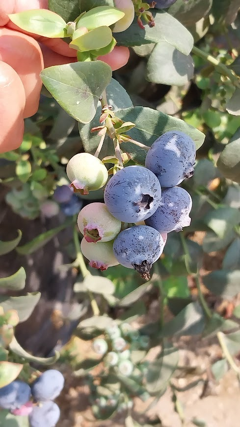
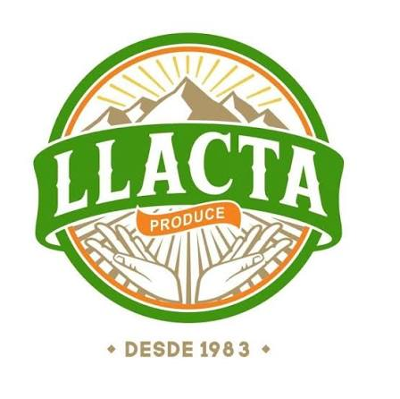
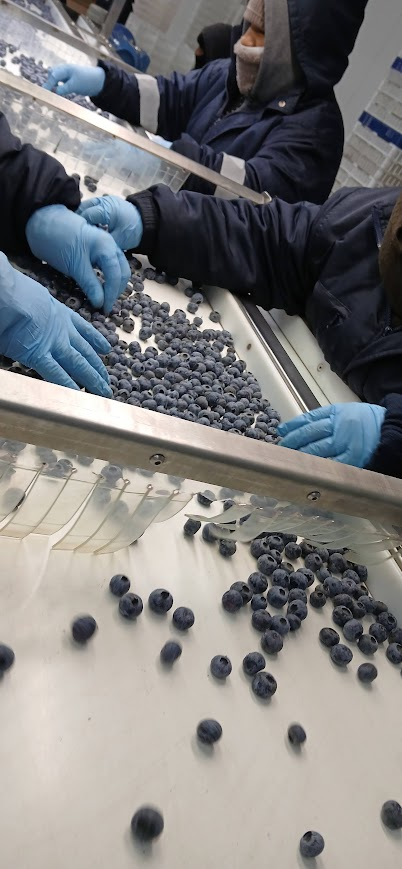
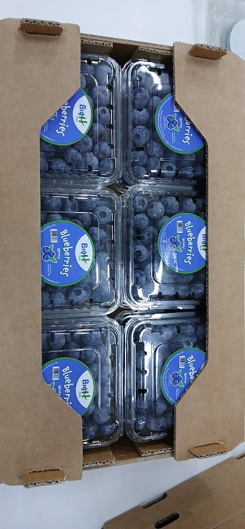
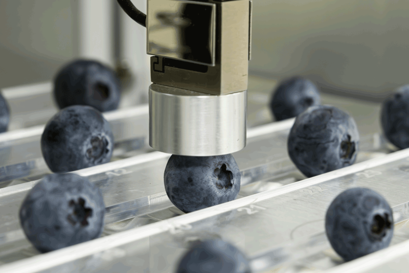
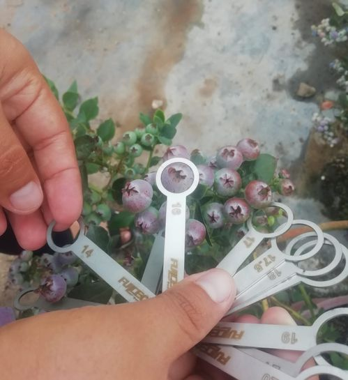
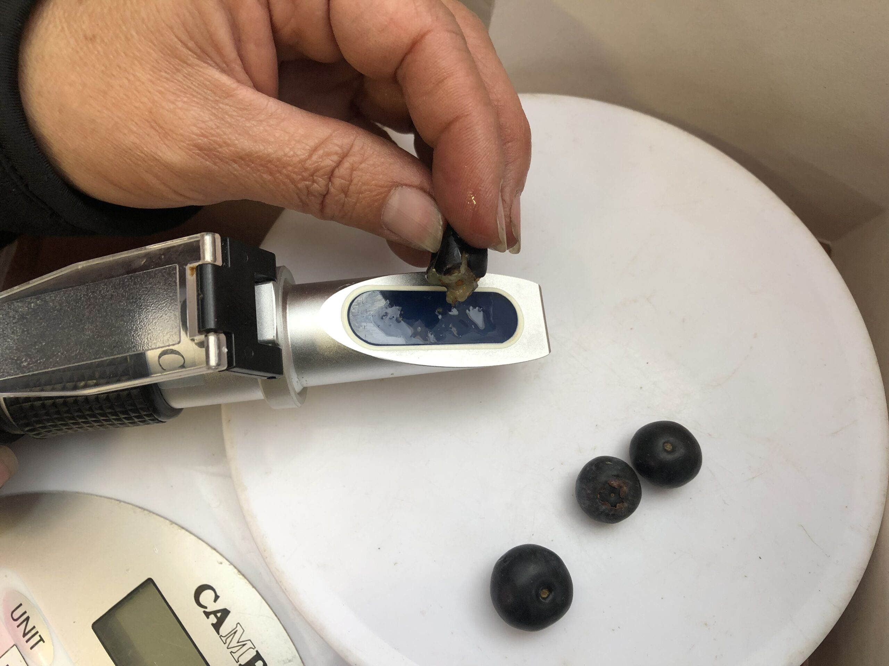
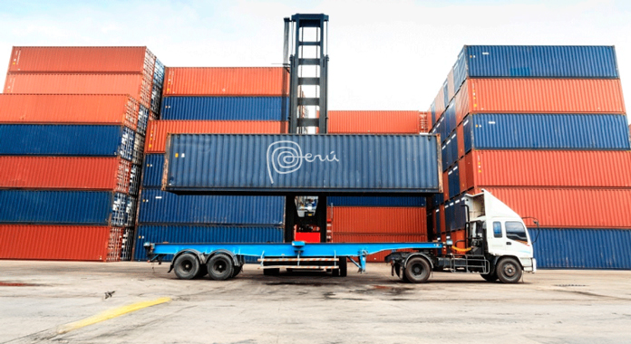

En puerto de destino
Arribo simulado al puerto de Vancouver. Pendiente de liberación y traslado al importador.
Último movimiento simuladoVARIEDAD
LOTE: --
--
Conoce el lugar donde comienza la historia de este lote.

El lugar, la variedad y el lote quedan unidos desde el primer registro.
--

Cada lote conserva los datos que permiten seguir su historia desde el campo.

Variedad: --
Fundo: --

Consultando información de la variedad...
Toca cada indicador para entender qué significa y por qué importa.
La firmeza indica cuánto se resiste el fruto a deformarse cuando recibe presión. Está relacionada con la turgencia del tejido, es decir, con qué tan bien conservan sus células el agua y la presión interna.

El calibre corresponde al diámetro ecuatorial del fruto, es decir, al ancho del arándano medido en su zona central.

Los °Brix indican la concentración de sólidos solubles en el jugo del fruto. En los arándanos, una parte importante de estos sólidos corresponde a azúcares.

La acidez representa la cantidad de ácidos orgánicos presentes en el fruto. Estos compuestos participan directamente en la percepción del sabor.
El porcentaje de defectos indica qué parte de la muestra presenta alteraciones que pueden afectar la apariencia o la calidad comercial del fruto.
Es el espacio donde se registran comentarios adicionales encontrados durante la evaluación de calidad del lote.
Consultando packing...

Sin información de recorrido registrada.
Origen pendiente
Selección, acondicionamiento y empaque.
Consulta los registros en la página anterior.
Transportista pendiente
Puerto de origen pendiente
Destino pendiente
Destino del ejemplo: North Vancouver, Canadá.
Historial ilustrativo de 2024. Los movimientos logísticos son simulados; la fecha de packing procede del ticket.
Arribo simulado al puerto de Vancouver. Pendiente de liberación y traslado al importador.
Último movimiento simuladoSalida simulada del puerto de origen, con destino a Canadá.
Ingreso simulado al puerto del Callao para gestionar el embarque.
Fecha indicada en el ticket. Packinghouse: VERDEFLOR S.A.C.
Dato del ticket